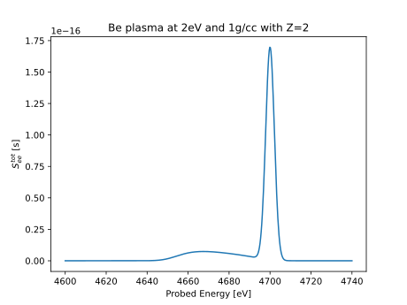

Generating a first spectrum
This page introduces the design of jaxrts, and guides you through the
process of generating a first spectrum.
Note that the full script is available in the example section of this
documentation, under Getting Started.
jaxrts provides three main types:
jaxrts.plasmastate.PlasmaStatecontains information about the plasma. It defines, e.g., the constituents of the plasma (in form ofjaxrts.elements.Elements), electron- and ion temperature, density, and ionization.jaxrts.setup.Setup, on the other hand, defines the geometry of the experiment, like probing energy, scattering angle, and source-instrument function.jaxrts.models.Modelcontain approximations for a given aspect of the plasma. A model should at least contain ajaxrts.models.Model.evaluate(), which takes aPlasmaStateand aSetupas argument, and computes the relevant quantities.
First, import the relevant packages:
from functools import partial
import matplotlib.pyplot as plt
from jax import numpy as jnp
import jaxrts
# We use the jpu package (which is enabling the usage of pint with jax) to
# handle units.
ureg = jaxrts.ureg
Here, please note two important features: We import jax.numpy, in
favor of numpy. This is crucial, as it enables us to use jax’ just in
time compilation.
For most cases, you can just use it as a drop-in replacement without any
errors. However, some problems might arise, especially when changing individual
entries of an array in-place. We highly recommend reading the documentation of
jax on potential pitfalls.
Secondly, we utilize units, throughout. This is achieved with the ureg
instance; its application should be clear after reading this example.
We rely on jpu, a port of pint to the jax ecosystem.
With this out of the way, we lets the define a two-times ionized beryllium plasma at \(\rho=1\text{g/cc}\) and an electron temperature \(k_BT_e = 1\text{eV}\).
If no ion temperature is given explicitly, we assume equilibrium of ion and electron temperatures as a default.
state = jaxrts.PlasmaState(
ions=[jaxrts.Element("Be")],
Z_free=jnp.array([2]),
mass_density=jnp.array([1]) * ureg.gram / ureg.centimeter**3,
T_e=2 * ureg.electron_volt / ureg.k_B, # T_e is the electron temperature.
)
We can investigate the generated plasma state:
print(state)
ions : Be
mass densities (g/cc) : 1.00
ionization : 2.00
ion temperatures (eV) : 2.0
e- temperature (eV) : 2.0
Models attached
===============
screening length : DebyeHueckelScreeningLength
ee-lfc : LFCConstant
free-bound scattering : Neglect
As we can see we have set densities, ionization, and temperature, as well as some default models.
Next, we also have to define a jaxrts.setup.Setup. jpu
also allows to convert string to quantities with units, as you can see below.
setup = jaxrts.Setup(
scattering_angle=ureg("60°"),
energy=ureg("4700 eV"),
measured_energy=ureg("4700 eV")
+ jnp.linspace(-100, 40, 500) * ureg.electron_volt,
instrument=partial(
jaxrts.instrument_function.instrument_gaussian,
sigma=ureg("5.0eV") / ureg.hbar / (2 * jnp.sqrt(2 * jnp.log(2))),
),
)
To attach a jaxrts.models.Model instance to the
jaxrts.plasmastate.PlasmaState, just assign the instance to the
appropriate key. The four keys you see below are mandatory to be set. However,
depending on the models implemented, you might have to specify different
additional models, e.g., ipd. See Models implemented for a comprehensive list of
models available in jaxrts.
state["ionic scattering"] = jaxrts.models.OnePotentialHNCIonFeat()
state["free-free scattering"] = jaxrts.models.RPA_DandreaFit()
state["bound-free scattering"] = jaxrts.models.SchumacherImpulse()
state["free-bound scattering"] = jaxrts.models.DetailedBalance()
Finally, we call jaxrts.plasmastate.PlasmaState.probe(), to evaluate
the scattering on the plasma state with the geometry defined.
# Generate the spectrum
See_tot = state.probe(setup)
# Plot the result
plt.plot(
setup.measured_energy.m_as(ureg.electron_volt),
See_tot.m_as(ureg.second),
)
plt.xlabel("Probed Energy [eV]")
plt.ylabel("$S_{ee}^{tot}$ [s]")
plt.title("Be plasma at 2eV and 1g/cc with Z=2")
plt.show()
Above code produces the following plot:
{kind=link}

Since we did not set jaxrts.setup.Setup.frc_exponent, above, it defaults
to zero, i.e., the output of jaxrts is proportional to the dynamic structure
factor, convolved with the source instrument function. See
Frequency redistribution correction for an
example showing the effect of this correction, if it was used.